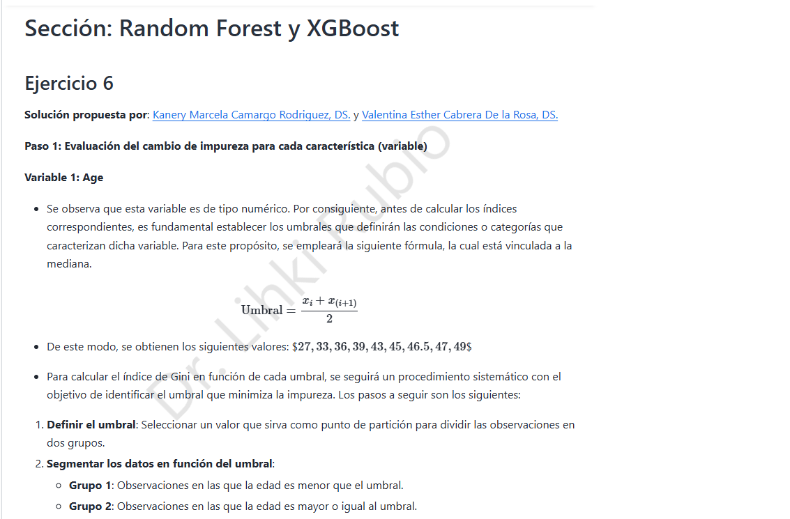
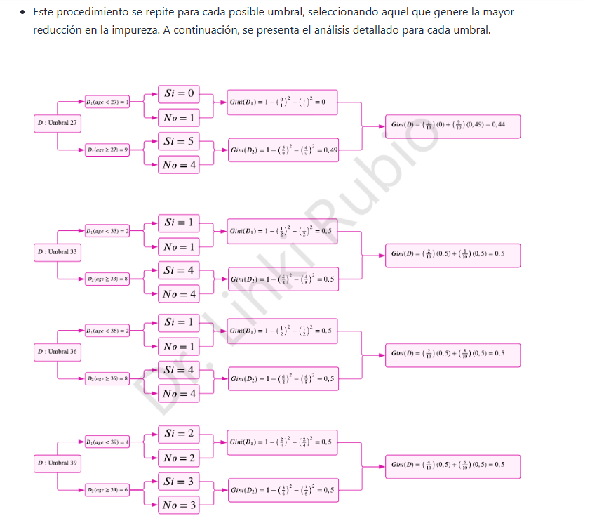
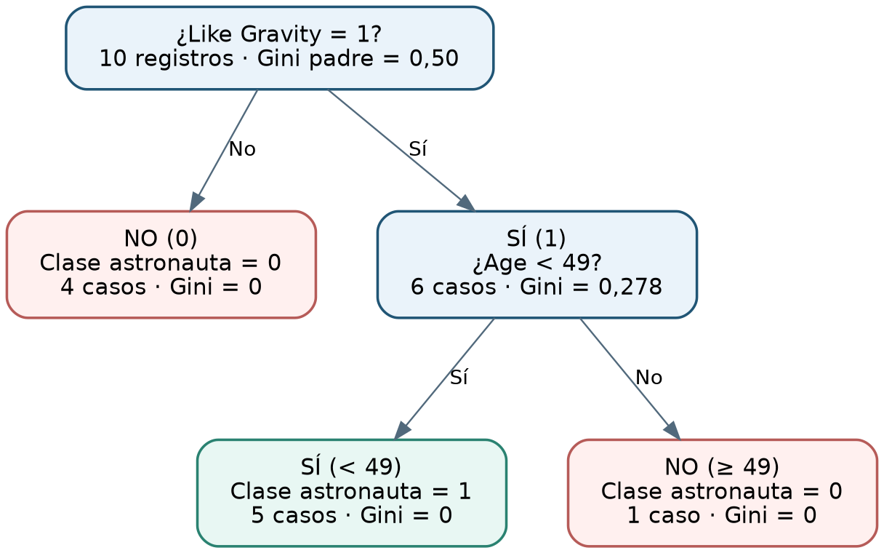

7. Árbol de decisión · Revisión del ejercicio 6


7.1 ¿Qué debía identificarse?
El documento solicita buscar un error en la solución del ejercicio 6, Random Forest y XGBoost. La solución publicada en las notas del profesor propone un árbol para la etiqueta Gonna Be an Astronaut según edad, gusto por perros y gusto por la gravedad. Contrastaremos los tamaños de nodos, los índices de Gini y el árbol resultante.
Para dos clases, la impureza de un nodo es \(G(D)=1-p_0^2-p_1^2\). Tras una partición en \(D_1,D_2\), la impureza ponderada es
La partición preferida es la de menor impureza ponderada, pues maximiza la reducción frente al nodo padre.
7.2 Primer error: tabla del umbral 36 de edad
La muestra original tiene 10 observaciones, con 5 de cada clase. Los umbrales ordenados pasan una observación adicional a la rama izquierda al avanzar al siguiente valor distinto. La solución publicada registra 2 observaciones a la izquierda del umbral 36, igual que en el umbral 33, pese a que se incorporó otra edad.
Con 3 registros a la izquierda y 7 a la derecha, y proporciones de clases \((2,1)\) y \((3,4)\) (o intercambiadas), tenemos
La impureza ponderada correcta es
En la ilustración del umbral 39 aparece además una ponderación escrita como \(6/10+6/10\); con grupos de tamaños 4 y 6 debe usarse \(4/10\) y \(6/10\).
7.3 Error decisivo: segundo nivel del árbol
La solución selecciona inicialmente Like Gravity, que produce cuatro casos negativos puros y una rama positiva con seis ejemplos. Para la rama Like Gravity = Sí, el material publicado entrega exactamente:
| Edad | Like Dogs | Astronauta |
|---|---|---|
| 30 | 1 | 1 |
| 36 | 0 | 1 |
| 44 | 1 | 1 |
| 47 | 1 | 1 |
| 47 | 0 | 1 |
| 51 | 1 | 0 |
Cinco casos tienen clase Sí y únicamente el caso de edad 51 tiene clase No. Por eso, el nodo padre de esta rama tiene
La edad crea umbrales candidatos 33, 40, 45.5 y 49; el último separa el registro de 51 de los demás.
| Umbral de edad | Tamaños | Composición de clases | Gini ponderado |
|---|---|---|---|
| 33 | 1 y 5 | izq. (1 Sí, 0 No); der. (4 Sí, 1 No) | 0.2667 |
| 40 | 2 y 4 | izq. (2 Sí, 0 No); der. (3 Sí, 1 No) | 0.2500 |
| 45.5 | 3 y 3 | izq. (3 Sí, 0 No); der. (2 Sí, 1 No) | 0.2222 |
| 49 | 5 y 1 | izq. (5 Sí, 0 No); der. (0 Sí, 1 No) | 0.0000 |
En particular,
Conclusión verificable: el umbral 49 es superior al 45.5 señalado como mejor en la solución publicada: el corte a 49 hace que las dos hojas sean puras, por lo que no hay razón para introducir una partición adicional por Like Dogs.
7.4 Revisión de Like Dogs
En los mismos seis registros, Like Dogs = 1 corresponde a cuatro observaciones: 3 Sí y 1 No; Like Dogs = 0 contiene 2 Sí y 0 No. Luego
Por tanto, el índice no es 0.17 en esta rama, como se afirma en la solución publicada. Frente a \(G_{Age<49}=0\), la edad es la mejor partición.
7.5 Árbol final corregido

Interpretación de las reglas del árbol:
- Si
Like Gravity = No, se prediceAstronauta = No(4 de 4 casos). - Si
Like Gravity = SíyAge < 49, se prediceAstronauta = Sí(5 de 5 casos). - Si
Like Gravity = SíyAge >= 49, se prediceAstronauta = No(1 de 1 caso).
Los diez registros del ejercicio quedan separados sin impureza en las hojas. Esto no demuestra que el árbol generalice sin errores fuera de la muestra: solo describe las diez observaciones utilizadas.
Hallazgo adicional: el umbral \((x_i+x_{i+1})/2\) es el punto medio de dos edades ordenadas consecutivas, no la mediana estadística de todas las edades.